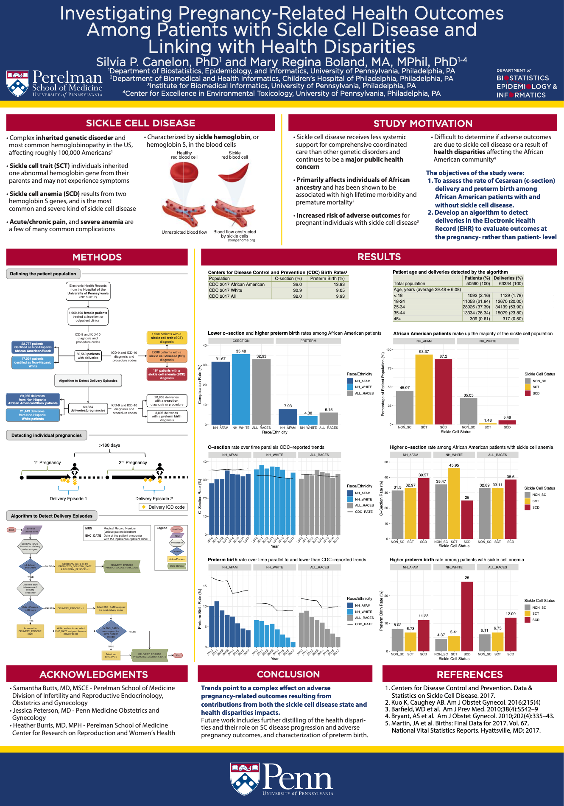

Investigating Pregnancy-Related Health Outcomes Among Patients with Sickle Cell Disease and Linking with Health Disparities
By Silvia Canelón in Research
November 20, 2019
Poster presented at the 2019 American Medical Informatics Association Annual Symposium held November 16th-20th in Washington D.C.

- Posted on:
- November 20, 2019
- Length:
- 1 minute read, 18 words
- Categories:
- Research
- Tags:
- pregnancy AMIA EHR sickle cell disease